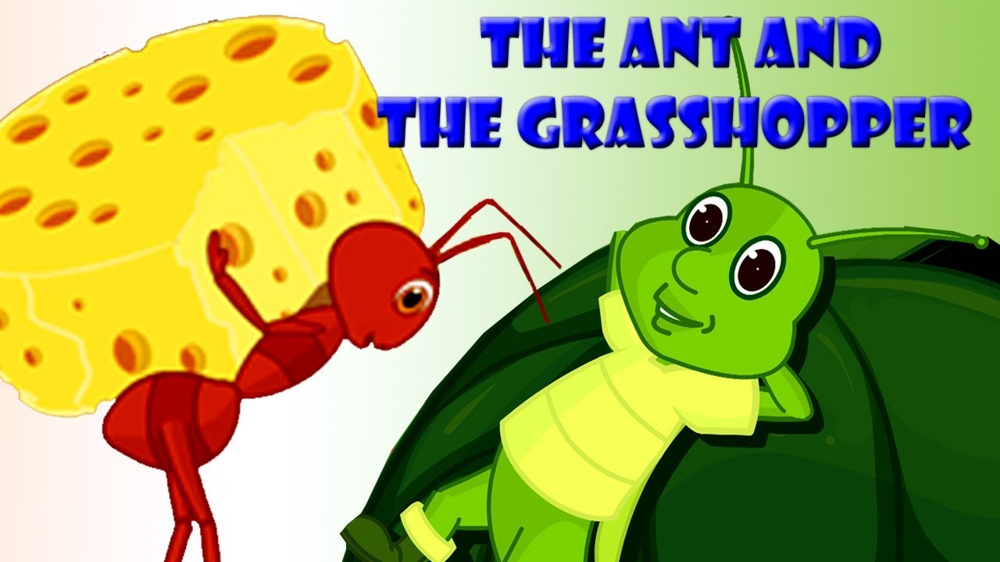

The ant and the grasshopper were best friends with very different personalities.
The grasshopper would spend his days sleeping or playing his guitar while the ant would collect food and build his ant hill.
Every now and then, the grasshopper would tell the ant to take a break. However, the ant would refuse and continue to complete his work.
Soon winter came making the days and nights cold. One day the colony of ants were busy trying to dry some grains of corn. The grasshopper who was extremely weak and hungry came up to the ants and asked "Can you please give me a piece of corn?" the ant replied "We worked hard for this corn all summer while you relaxed, why should we give it to you?"
The grasshopper was so busy singing and sleeping that he didn't have enough food to last winter. The grasshopper realized his mistake.
Make use of opportunity while you have it
This is a story from Panchatantra.
A monkey lived on a berry tree on the River Bank. Once he saw a crocodile under the tree who looked hungry and tired. He gave the crocodile some berries, the crocodile thanked the monkey and became one of his friends.
The monkey would give berries to the crocodile every day. One day the monkey even gave the crocodile extra berries to take to his wife.
His wife enjoyed the berries but told her husband that she wanted to eat the monkey's heart. She was a wicked and cunning woman. The crocodile was upset, but he decided that he needed to make his wife happy.
On the next day, the crocodile went to the monkey and said that his wife had called him for dinner. The crocodile carried the monkey on his back across the river. He told this monkey his wife's plan.
The monkey had to think quickly if he wanted to save himself. He told the crocodile that he left his heart at on the berry tree and that they needed to return.
On reaching the monkey climbed the tree and spoke. "I'm not getting down; you betrayed my trust and that means our friendship is over"
Never betray someone who trusts you and choose your friends wisely.
An old Stork lived on the side of a fish pond. He was too old to fish any longer, and he had to come up with an idea for food. Suddenly, he had a great idea. He stood in the water with a sad face. A crab came up to him and ask him why he was so unhappy.
The Stork said "I've heard that this pond is going to dry up soon and now I have to fly away to another pond." Concerned, the crab asked the stork to save the animals in the pond as well. He would take a couple of fish in his beak and fly away towards another pond. Once he would reach far out of sight the pond, he would eat them. He did this many times.
Now it was the crab's turn. As they were flying the crab looked down but could not see a pond however he saw a lot of fish bones. The crab immediately realized what was happening and grabbed the stork's throat tight with his sharp claws. The stork struggled to get free. But the crab held on. Soon the stork fell to the ground. The crab crawled back to his pond to tell the story to the rest of the pond creatures.
Too much greed is bad for you and will only cause you harm
Click here to go to top